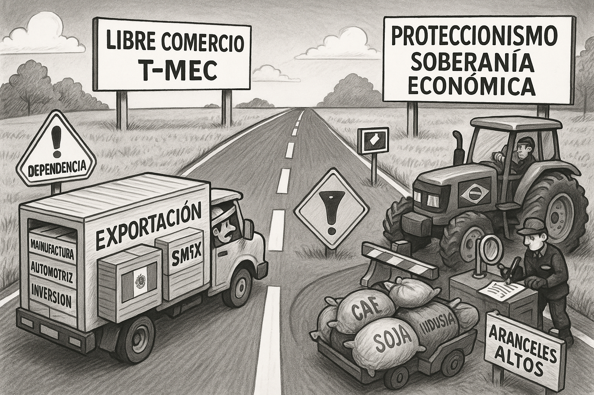
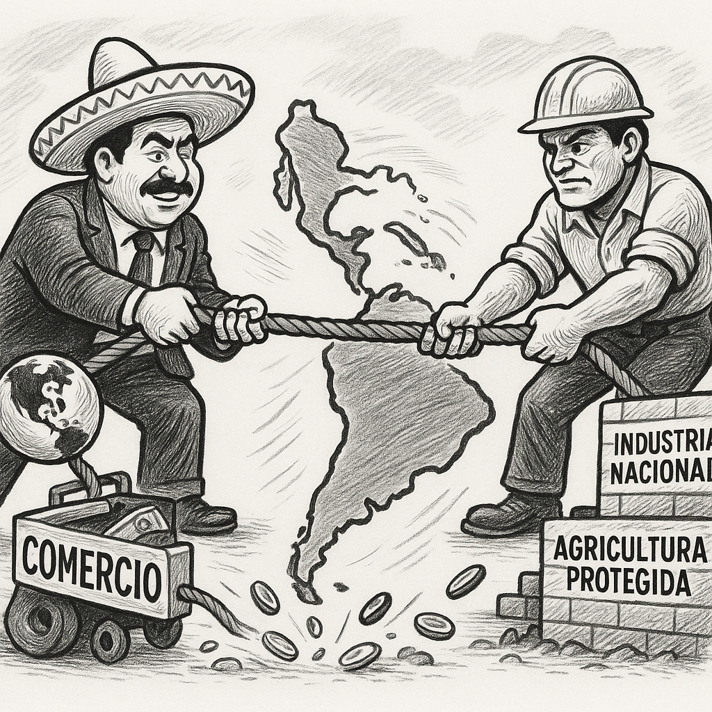

La Encrucijada Arancelaria de América Latina – México y Brasil en Rutas Opuestas
El proteccionismo y la liberalización dividen el rumbo de las dos mayores economías latinoamericanas, con consecuencias profundas para la región y el comercio global.
La arquitectura del comercio global atraviesa una fase de redefinición sin precedentes, marcada por tensiones geopolíticas, el surgimiento de nuevos bloques económicos y una creciente tendencia hacia el proteccionismo selectivo. En este contexto volátil, la forma en que las principales economías emergentes de América Latina —México y Brasil— gestionan las complejidades de la política arancelaria no solo revela estrategias económicas, sino también visiones contrastantes sobre su papel en el orden mundial y su compromiso con la apertura o la soberanía económica.
Un análisis detenido muestra que, lejos de seguir trayectorias paralelas, estas dos potencias regionales han optado por caminos notablemente divergentes, cuyas implicaciones merecen un escrutinio exhaustivo.
Mientras la administración mexicana consolida su integración en las cadenas de valor norteamericanas, priorizando la estabilidad y la previsibilidad derivadas de acuerdos como el T-MEC, su política arancelaria ha tendido hacia la liberalización. El objetivo: atraer inversión extranjera directa y fortalecer la competitividad exportadora. Sin embargo, este enfoque pragmático plantea preguntas relevantes. ¿Hasta qué punto depende México de un solo bloque económico y cómo afecta esto su autonomía comercial y diversificación de riesgos? ¿La apertura irrestricta protege suficientemente a las industrias emergentes, o las expone a una competencia desigual que podría sofocar su desarrollo antes de madurar?
Por su parte, Brasil ha mantenido históricamente —y en gestiones recientes— una inclinación más pronunciada hacia el uso de aranceles como herramienta para proteger su amplia base industrial y agrícola. Bajo el estandarte de la soberanía económica y la defensa del empleo local, persigue fortalecer su resiliencia interna frente a las fluctuaciones del mercado global. No obstante, esta estrategia también suscita interrogantes: ¿Es el proteccionismo el camino más eficaz para el desarrollo a largo plazo, o podría, paradójicamente, fomentar ineficiencias y desalentar la innovación al disminuir la presión competitiva? ¿Cómo se equilibra la protección de sectores estratégicos con el impacto en el costo de vida y la capacidad de las empresas para acceder a insumos competitivos?
La divergencia entre ambas economías no es solo cuestión de cifras o acuerdos; es la manifestación de filosofías de desarrollo que podrían incidir de manera fundamental en la cohesión e influencia de América Latina en el escenario global. Mientras México se posiciona como bastión del libre comercio en la región, estrechamente vinculado al epicentro económico del norte, Brasil busca forjar un camino más introspectivo, orientado a la autonomía estratégica.
La verdadera pregunta de esta encrucijada arancelaria es si estas rutas opuestas fortalecerán de manera complementaria al continente o, por el contrario, generarán fricciones y divisiones que dificulten una visión común para el futuro comercial de América Latina. Un análisis valiente exige mirar más allá de las justificaciones oficiales y explorar las consecuencias no intencionadas, los ganadores y perdedores ocultos, así como las implicaciones a largo plazo para la equidad social y la sostenibilidad económica en ambos gigantes latinoamericanos. Solo el tiempo dirá si sus decisiones los acercarán o distanciarán en un mundo cada vez más interconectado y, a la vez, fragmentado.